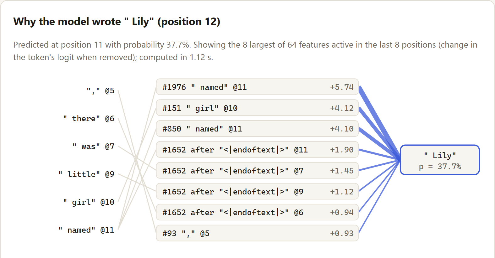

Lily. Each active feature is removed in turn and the model rerun; a blue edge means the word became less likely without that feature, and its width is how much.
In short
- Adding one learned feature direction to the model's internal state makes 83% of stories mention its concept, against 9% for a random direction of the same size.
- A guard that reads features before a token is chosen catches names a regex cannot see. Together they catch 71% of names never used in fitting, where the regex alone catches 52%. The price: 21 other tokens per 1,000 held back by mistake, and 0.65 ms per token.
- The browser engine matches PyTorch to 2.2e-05 in the logits, checked on every push.
- Negative results stay in: no induction heads formed, and the feature guard on its own does not beat a regex.
Why I built it
Interpretability research usually happens on large models with large budgets. I wanted to find out how much of it one person can do end to end on a laptop: build the model myself so no part of it is a black box, look inside it with current techniques, and turn one finding into a feature whose value can be measured. It all had to run without a GPU, a server or an API key, so anyone can open it.
What I built
- The model. A byte-level BPE tokenizer, a GPT-style transformer and a training loop, written with plain PyTorch primitives. Trained for 3.0 hours on an Intel Core i3-1115G4 laptop CPU (28.7M tokens of TinyStories), it reaches a validation loss of 1.90 nats per token, against 3.53 for a bigram model and 5.87 for unigram frequencies.
- The browser engine. The same forward pass in dependency-free JavaScript, with a KV cache. The weights take 5.2 MB, and it generates about 214 tokens per second in Node.js on the same laptop. 2,000 of 2,000 validation stories tokenize exactly as in Python, and greedy generation matches PyTorch token for token over 300 tokens on all 3 test prompts.
- The microscope. A top-k sparse autoencoder (SAE) on the residual stream entering block 2, with 2,048 features, automatic feature labels, steering, attribution checked by ablation, and a replay of training across 23 saved checkpoints.
- The guard. A classifier on SAE features that predicts, before the model picks the next token, whether that token starts a name, plus a word check once the word is written.
Once upon a time, there was a little girl named Lily. Lily had a friend named Tim. They loved to play together. One day, they saw a big box of copper in the yard. Lily and Tim wanted to go inside the box. They played with the copper and made a big snowman. They had so much fun. Then, Lily said, "Let's go inside the house!" Tim felt happy and said, "Okay, let's go inside and play!" The next day, Lily and Tim went back inside the house. They saw the tall cat and waved her head. "Good job, Lily!" said the cat. Lily smiled and they both played together, feeling happy and happy.
How I kept myself honest
- No typed numbers. Every number in the README, on this page and in the reports is written by a script from the experiment results, and CI fails if a page no longer matches them.
- A baseline for every claim. Random directions for steering, PCA for the SAE, an untrained SAE for feature quality, a regex and simpler classifiers for the guard.
- Rules before results. Which SAE the UI uses, which concepts to steer, what counts as a sharp drop in the loss and which guard ships were each decided by a rule written down before the data came in. Anything added after a first look is marked as such in the reports.
- Tests across two languages. JavaScript and PyTorch are compared on the same weights for logits, tokens, SAE features, steering, attribution and guard scores, on every push.
Finding 1: the features are real, and they steer
The SAE the interface uses (k = 8 active features per token) explains 88.8% of the variance of the model's internal state. Swapping that state for the SAE's reconstruction raises the model's loss by 12.7%. 87% of the features put most of their strongest examples on a single token, against at most 42% for the model's own dimensions, random directions or an untrained SAE.
To steer, I add a feature's direction to the internal state while the model writes. I fixed the concepts in advance (ball, dog, cat, tree, cake, car, flower; rain had no matching feature and was dropped) and compared each with random directions of the same size. Strength is the size of the added vector relative to the average size of the internal state.
Data table
| strength | feature | random |
|---|---|---|
| 0 | 8.9% | - |
| 0.25 | 48.5% | 8.8% |
| 0.5 | 82.7% | 9.2% |
| 1 | 74.7% | 6.6% |
| 2 | 61.6% | 1.8% |
The price is fluency. At strength 0.5 the steered stories are harder for the unsteered model to
predict (loss 2.18 nats per token, against 1.12 without steering and
1.63 with a random direction). Pushed harder, the text falls apart. The example in the report
(not cherry-picked) is the ball feature at strength 1:
Once upon a time, there lived a far treasure. It was rolled very high high up in the sky. One rolled down, near up to far. rolled far from…
Finding 2: reading features beats reading text, but not a regex
The guard has to decide before the next token exists, and that is genuinely uncertain: after
Lily and
the next word may be a name or her
. Reading the model's internal features clearly helps:
F1 0.46, against 0.37 for a classifier that sees only the previous
two tokens. But a regex that checks the finished word scores 0.69. The regex's blind
spot is a name at the start of a sentence, which looks like any other capitalized word, and that is where the
internal signal adds the most. The combination and the strict mode were added after the first results; their
thresholds still come only from the calibration stories.
Data table
| method | precision | recall | F1 | false blocks / 1,000 tokens |
|---|---|---|---|---|
| regex + name list | 0.998 | 0.522 | 0.686 | 0.0 |
| SAE-feature guard | 0.454 | 0.473 | 0.463 | 21.3 |
| regex or SAE guard | 0.556 | 0.715 | 0.626 | 21.3 |
| regex or SAE guard, strict | 0.249 | 0.938 | 0.394 | 105.6 |
The guard adds 0.65 ms to a 5.08 ms generation step in the JavaScript engine. A follow-up compared SAEs of different sizes and the raw internal state at every layer, choosing on a separate split with yet another set of names. The k = 32 SAE won (test F1 0.47, against 0.45 for k = 8), slightly ahead of the best raw layer (0.46), so the demo now uses it.
Finding 3: what did not work
- No induction heads. I scored every attention head at all 23 checkpoints on repeated random tokens. The best prefix-matching score is 0.031, far below the 0.5 threshold, while a small control model trained to copy reaches 0.90, so the probe works. Previous-token heads, the first half of that circuit, reached only 0.24. This model and budget did not get there.
- The cheap attribution method is weak. Direct logit attribution, the method the project brief named, correlates with the true effect of removing a feature at only 0.17 (Spearman), because 58% of that effect travels through attention from earlier positions. Gradient times activation ranks features far better (0.73), though it picks the single most important feature less often (44% vs 56%). The circuit graph in the demo uses exact ablation instead.
- A lenient rule. The rule that picked the interface's SAE chose k = 8, which raises the loss by 12.7%. The k = 32 SAE raises it by only 3.7%, is just as token-specific (87%) and has 1 dead feature against 231. I kept the rule's choice as the default and made the microscope switchable.
Limits
- The model is tiny and trained on simple children's stories; what holds here may not hold for a large model.
- The new names in the guard test were swapped into real stories by a script, so the test measures names in familiar places, not every way a name can appear.
- Speed and latency were measured in Node.js on one laptop; browsers and devices differ.
What I would do next
- Train longer, on a GPU, to see whether induction heads appear and whether the loss drops when they do.
- Repeat the study on Indonesian text, asking whether SAE features capture affixes such as me-, di- and -kan.
How it was built
I built Glassbox with Claude Code, an AI coding assistant, as a pair programmer, working from a written project brief with explicit rules: no invented numbers, a baseline for every claim, negative results reported. I set the goals and constraints, made the decisions along the way and reviewed the results at every milestone; the assistant wrote most of the code and ran the experiments.
Python · PyTorch (primitives only) · NumPy · pytest · JavaScript (no dependencies) · GitHub Actions · GitHub Pages
Demo · Code · All reports · Reproduce it